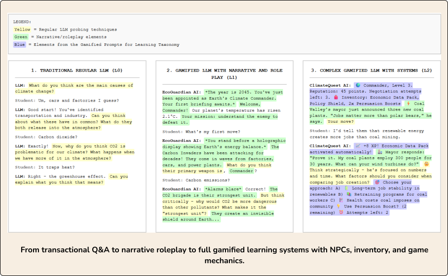
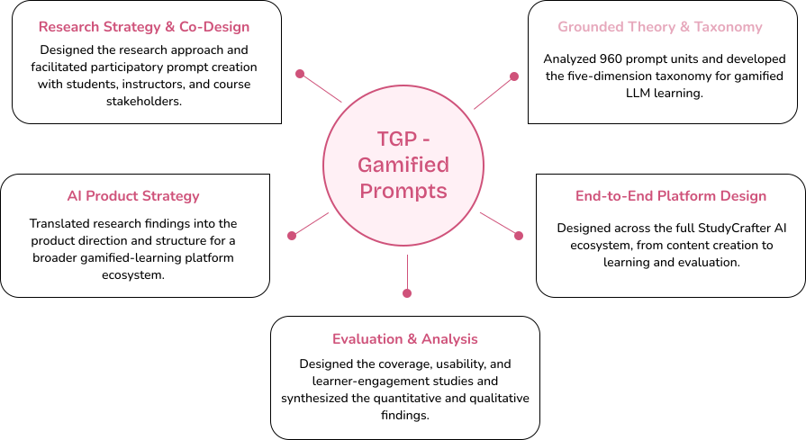
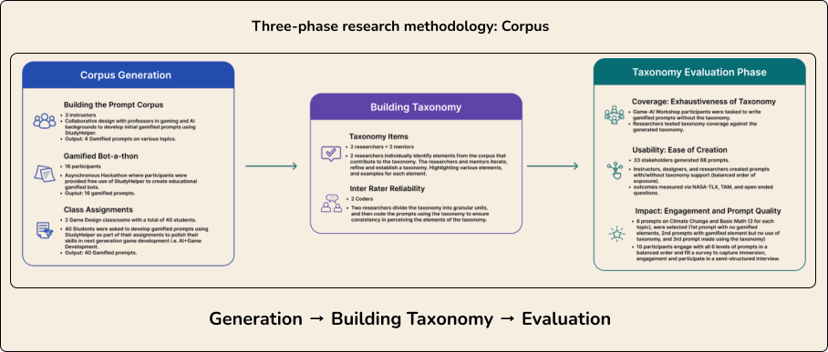
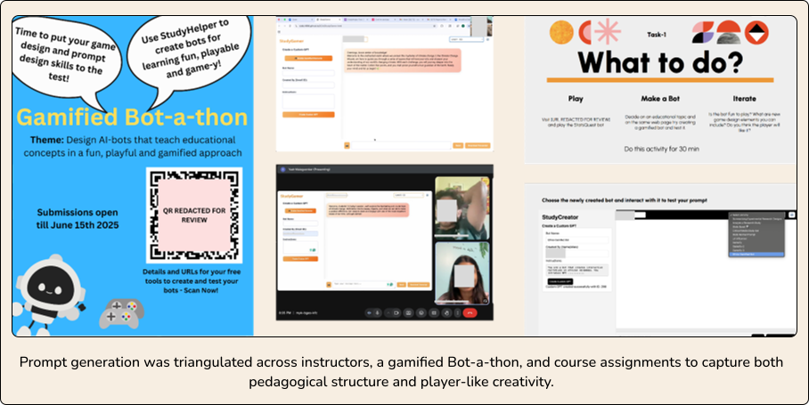
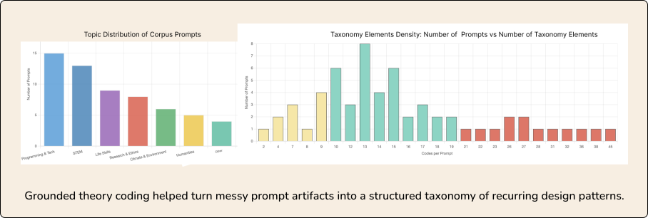
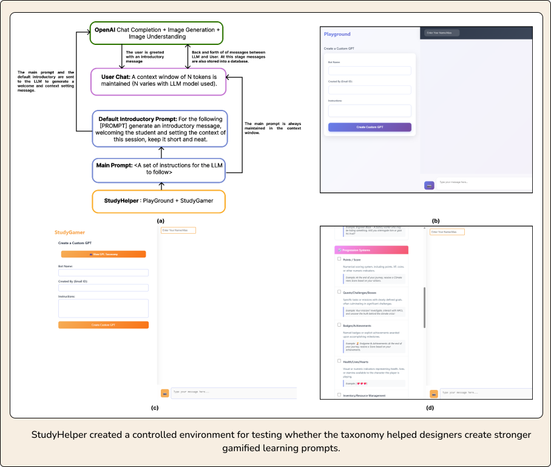
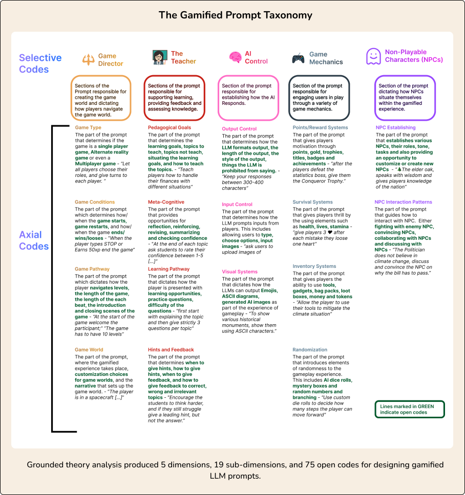
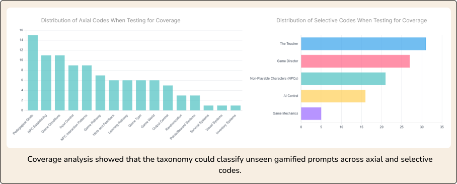
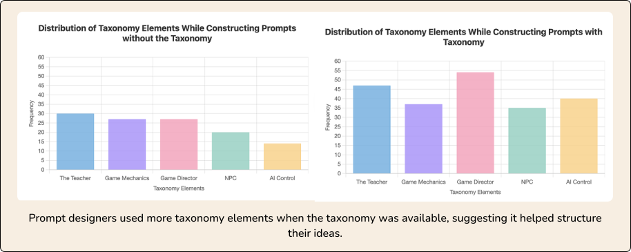
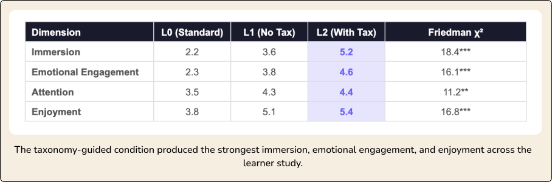

Turning Chatbots into Game Engines for Learning
A taxonomy for embedding game mechanics into LLM prompts, transforming transactional AI interactions into immersive, playful learning experiences.
01. Project Snapshot
The Essentials in 60 Seconds
Problem
LLM interactions in education are often transactional — students ask, the AI answers, and learning stays shallow.
The Approach
I used participatory design with 70+ stakeholders to co-create gamified prompts, then applied grounded theory to turn the patterns into a formal taxonomy.
The Taxonomy
The final framework includes five dimensions and nineteen sub-dimensions: Game Director, Game Mechanics, The Teacher, AI Control, and NPCs.
The Impact
The taxonomy supported 2.4× immersion lift, 97% coverage on unseen prompts, and adoption across university partners.

02. My Role
End-to-end research, taxonomy development, platform design, and evaluation
I led the research strategy, grounded theory analysis, platform interaction design, and experimental evaluation across five core responsibility areas:

- Research Strategy & Co-Design: Designed the overall research strategy and facilitated participatory prompt creation with stakeholders.
- Grounded Theory & Taxonomy: Segmented and analyzed 960 functional prompt units and developed the taxonomy through open, axial, and selective coding.
- AI Product Strategy: Translated research findings into a reusable design framework for gamified LLM learning experiences.
- End-to-End Platform Design: Designed and built the StudyHelper research platform and its Playground and Taxonomy modes.
- Evaluation & Analysis: Designed the coverage, usability, and learner-engagement evaluations, conducting interviews and statistical analysis.
03. The Problem
Students were outsourcing their thinking to AI.
LLMs are becoming part of everyday learning, but most educational interactions still follow a simple pattern: students ask, the AI answers, and the learning experience stays passive.
The problem was not access to information — it was the lack of structure for deeper engagement. Without intentional design, LLMs can make learning faster while also making it easier for students to avoid thinking through the material themselves.
Game-based learning can create deeper engagement through challenge, roles, feedback, and progression. But building conventional game-based learning experiences usually requires specialized development, budgets, and educator training.

Core tension
Games create engagement but are difficult to build.
LLMs are accessible but often encourage passive use.
Research gap
Educators had a powerful engine but no shared design language for turning chatbot interactions into structured, game-like learning experiences.
Research question
What game-design elements and strategies can be embedded into LLM prompts to enhance student engagement?
04. Research Approach
Bottom-up discovery, not top-down theory.
I had two options: start from existing serious-games theory deductively and force those categories onto LLM prompts, or start from real artifacts created by real stakeholders and let the design patterns emerge inductively from the data.
I chose a bottom-up approach because LLM behavior differs from traditional coded game engines. In a game engine, rules are coded. In an LLM, game-like behavior has to be prompted, maintained, and controlled through language.
I owned the end-to-end research design, co-design workshops, coding pipeline, platform design, and experimental evaluation.

Phase 1 — Corpus Generation
I used participatory design to build a corpus of 60 gamified learning prompts across three sources: instructors, a gamified Bot-a-thon, and course assignments. Each group added a different perspective — instructors brought pedagogical structure, students brought game-like creativity, and assignments added volume and ecological validity.

Phase 2 — Grounded-Theory Analysis
I segmented the prompts into 960 functional units — each unit representing an instruction that shaped how the LLM should behave. Through grounded theory coding (open coding → axial coding → selective coding), I turned messy prompt artifacts into a structured taxonomy of recurring game-design patterns.

Phase 3 — Evaluation + StudyHelper
I designed and built StudyHelper, a controlled research platform with Playground Mode and Taxonomy Mode. This let me evaluate the taxonomy across three questions: whether it could classify unseen prompts, whether it helped designers create prompts with less effort, and whether taxonomy-guided prompts improved learner engagement.

05. The Turning Point
The design challenge was not implementation — it was orchestration.
I expected existing game-design frameworks to map cleanly onto gamified prompts. But the data showed something different: LLMs do not behave like traditional game engines.
In a traditional game, rules are coded and outcomes are predictable. In an LLM, the prompt has to persuade the model to simulate rules, maintain roles, follow constraints, and keep the experience coherent through language.
From: “What game mechanics can we add to prompts?”
To: “How do we orchestrate game-like behavior inside an LLM conversation?”

AI Control became its own category
Designers needed to define output limits, input formats, visual styles, and response boundaries so the LLM would not break the experience.
NPCs became the engagement engine
Characters changed the learner’s role from answering questions to participating in a world.
Attention and immersion behaved differently
Basic narrative framing helped attention. Structured mechanics such as progression, NPCs, and inventory drove deeper immersion and emotional engagement.
06. The Taxonomy
5 dimensions, 19 sub-dimensions — a design language for gamified prompts.
The grounded theory analysis produced the Taxonomy of Gamified Prompts, a framework containing 5 selective-code dimensions, 19 axial sub-dimensions, and 75 open codes for designing game-like learning experiences inside LLM conversations.
Instead of treating prompts as one-off instructions, the taxonomy breaks them into reusable design elements that help educators structure challenge, feedback, roles, progression, constraints, and interaction.


- Game Director
- Defines overall game structure, world, win/loss conditions, and level progression.
- Game Mechanics
- Adds systems such as points, rewards, inventory, survival mechanics, and randomization.
- The Teacher
- Connects gameplay to learning goals, scaffolding, hints, feedback, and reflection.
- AI Control
- Controls output format, input mechanics, visual style, and response boundaries.
- NPCs
- Creates characters, roles, and interaction patterns that make learners participants rather than answer-seekers.
07. Evaluation
Testing coverage, usability, and learner engagement across three studies.
STUDY 1 — COVERAGE
I tested whether the taxonomy could classify gamified prompts created by designers who had never seen the framework. This helped check whether the taxonomy generalized beyond the original corpus.

Result: The taxonomy classified 97% of blind-workshop prompt units.
STUDY 2 — USABILITY
I ran a within-subjects study where participants created prompts with and without the taxonomy. This tested whether the taxonomy reduced design effort while helping people create more structured gamified prompts.

“I felt like I was firing off ideas so much faster with this because it was easier to translate my ideas into a game with the library.” — P19, Prompt Designer
Result: Designers reported 50% lower frustration and 63% lower cognitive load when using the taxonomy.
STUDY 3 — LEARNER ENGAGEMENT
I compared three study conditions — a standard prompt, a gamified prompt without the taxonomy, and a gamified prompt with the taxonomy — to separate basic gamification from structured, taxonomy-guided gamification.

“Here I am not just answering, instead I am talking to a person… It’s like a small community.” — P7, Student Participant
Result: Taxonomy-guided prompts produced a 2.4× immersion lift, with stronger emotional engagement and enjoyment.
08. Decisions, Trade-offs & Limitations
Methodological choices and study boundaries.
1. Bottom-up taxonomy over top-down theory
The inductive approach took longer but reflected how people actually designed with LLMs rather than forcing existing game frameworks onto prompt data.
2. Functional units over full-prompt coding
Segmenting prompts into functional units preserved design intent and supported direct comparison across prompt types.
3. Three stakeholder groups over one source
Instructors brought pedagogical structure, students brought game-like creativity, and course assignments added volume and ecological validity.
4. Engagement over learning outcomes
The initial evaluation focused on engagement, usability, and taxonomy coverage. Longitudinal learning transfer and retention require future pre/post studies.
5. Small learner-study sample
The learner study showed strong directional results, but the sample was small. I treated the quantitative results as strong directional evidence supported by interviews, not a universal final conclusion.
09. Impact & Outcomes
From research artifact to cross-university collaboration.
The taxonomy moved beyond a classroom research project into a framework being used to support gamified learning design across institutions.
Northeastern, UT Houston, NYU, and UC.
Accepted as a research contribution at a premier games and HCI venue.
Validated using unseen gamified prompt artifacts from a blind workshop.
Integrated into StudyCrafter AI as a publicly available educator tool.
Why it mattered
For educators
A practical design language for creating game-like learning experiences without building complete games from scratch.
For HCI practitioners
A structured way to design, analyze, and compare LLM-based educational interfaces.
For researchers
A reusable framework for studying combinations of mechanics, pedagogy, AI controls, and NPCs.
10. Skills & Methods Demonstrated
Core competencies applied throughout the project.
Research
- Participatory Design
- Co-Design Workshops
- Grounded Theory
- Within-Subjects Experiments
- Semi-Structured Interviews
Analysis
- Qualitative Coding
- Constant Comparison
- Inter-Rater Reliability
- Wilcoxon Signed-Rank
- Friedman Tests
- NASA-TLX · TAM
Domain
- Game-Based Learning
- Educational Technology
- LLM Orchestration
- Serious Games
Final Takeaway
“We gave educators a powerful engine. This research gave them the manual.”